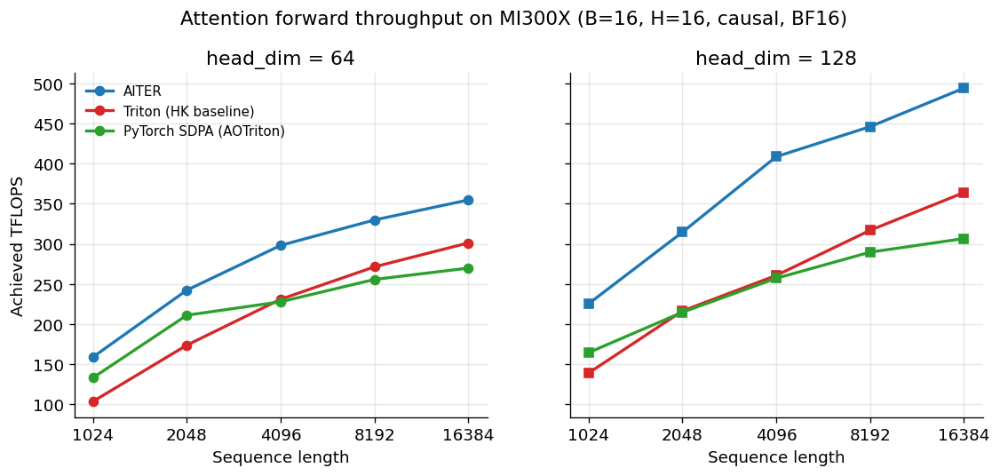
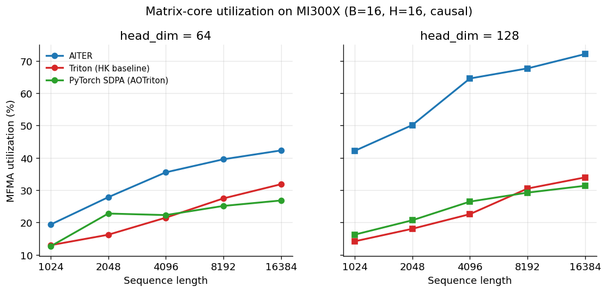
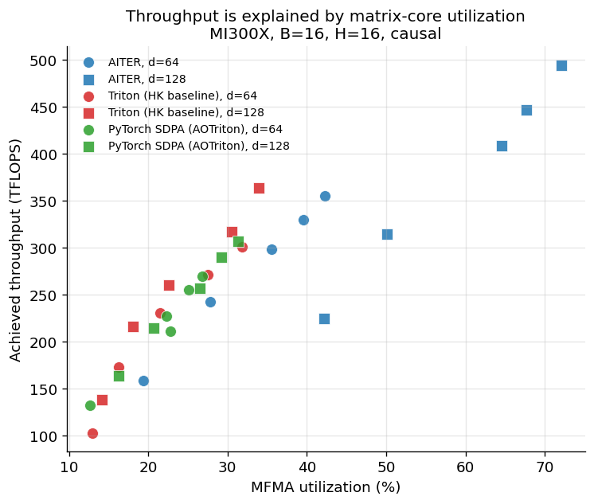

The expected result is that AMD's vendor library beats portable DSL kernels on AMD hardware, the way vendor libraries always have on every GPU platform. This post measures exactly how much, and why. On a single MI300X, across a grid of FlashAttention-forward shapes typical of production workloads, AITER outruns the Triton-on-AMD baseline by 18–62%. PyTorch SDPA dispatches to AOTriton on this hardware and tracks the Triton baseline closely. TileLang is included as a scope limit rather than a peer-comparable result; the generic forward- attention example we ran reaches 37 TFLOPS at the calibration shape, well below what the post's three measured implementations achieve. The caveats section explains why we don't treat this as a benchmark of TileLang.

Throughput across the shape grid. Three implementations, five sequence lengths, two head dimensions. AITER leads at every cell; SDPA tracks the Triton baseline closely.
The interesting part isn't the ranking — that part was expected — but the shape of the gap and the reason for it. The rest of the post lays out the harness, validates it against HazyResearch's published baselines (within 1% on AITER), walks the throughput data shape by shape, and then turns to the hardware counters that explain the ranking mechanistically. The gap between AITER and the Triton-lineage kernels on MI300X is, at root, a matrix-core scheduling gap — it has a measurable size, a specific cause, and a name. That's a useful thing to know if you write attention kernels on AMD hardware in 2026, because it tells you what the portable option is currently good for and what it isn't.
Why this comparison, why now
The state of attention on AMD has moved in the last year. AMD's own AITER library has matured into a production-grade kernel set built on Composable Kernel, and the AOTriton project ships ahead-of- time-compiled Triton attention kernels that PyTorch SDPA now dispatches to on ROCm builds. Both are real, well-tuned, and competitive at the shapes that matter for inference.
On the benchmarking side, HazyResearch's
HipKittens project — and
specifically its attn_fwd_baselines.py harness — has become the
public calibration point that anyone doing this work uses as a
reference. Tile-based DSLs like TileLang have published their own
MI300X claims. The result is a comparison landscape that's much richer
than it was eighteen months ago — and one that's spread across several
repos, several blog posts, and several different ways of reporting
numbers.
What that landscape mostly does well is rank. Benchmarks tell you
which kernel is fastest at a given shape. What it does less often is
explain the rankings — what the hardware is actually doing
differently between two kernels that produce the same output at
different speeds. That gap is what this post tries to fill: a single
harness, four implementations, a published-baseline calibration, and a
second pass with rocprofv3 to turn the ranking into a mechanistic
story about matrix-core utilization.
Audience: kernel writers picking tooling, framework integrators trying to understand what their dispatch is actually doing on this hardware, and researchers who'd rather have hardware-grounded numbers than vendor claims.
Methodology
Hardware and environment
All measurements were taken on a single AMD Instinct MI300X running ROCm 7.2.2 and PyTorch 2.10.0 (HIP build). The sweep landed inside a single session, so every row in the dataset reports the same environment — but the harness stamps the ROCm and PyTorch versions on each row regardless, because containers are reassigned between sessions, and stamping each row keeps the dataset honest across longer-running campaigns.
The harness
For every cell — one (implementation, shape, dtype) combination — the
harness allocates the inputs, runs a warmup loop to let any JIT or
autotune work settle, then times a measured loop using
torch.cuda.Event records around the kernel call alone, not around
allocation or data movement. Counts default to fifty warmup iterations
and thirty measured iterations per cell; the measured times are
reported as average, median, p25, and p75. Each cell also runs a
correctness check, comparing the kernel's output against PyTorch SDPA
at the same shape, dtype, and seed. The runner reads the cell from a
YAML config and appends one row per cell to a CSV. Code lives in the
project repo bench/runner.py.
Calibration against published numbers
The numbers in this post are only as good as the harness behind them, so before any of the sweep runs we calibrated against HazyResearch's published AITER baseline, which uses the same forward-attention kernel at a standard reference shape (B=16, H=16, N=16384, D=64, causal, BF16). Their reported throughput is 355.0 TFLOPS; our harness gets 352.5. Within 0.7% — close enough that any disagreement we report elsewhere is unlikely to be a methodology artifact. The PyTorch SDPA calibration was less tight (we measured 8% higher than their reported SDPA number), which turned out to be the first sign of the AOTriton dispatch story the post returns to later.
The shape grid
The sweep covers five sequence lengths (1024, 2048, 4096, 8192, 16384) and two head dimensions (64, 128), at a fixed batch of 16, 16 query heads, and a non-grouped KV configuration, with causal masking on. All three timing-sweep implementations ran at BF16; TileLang ran at FP16 because its example kernel hardcodes that dtype. The grid is aimed at the prefill regime of a moderate-batch inference workload — long enough sequences to push the kernels into the regime where attention dominates, balanced batch sizes that don't trivially saturate the machine. What the grid does not cover — decode-regime small-batch shapes, grouped-query configurations, the backward pass — is the subject of the caveats section. The full grid lives in configs/sweep_v1_*.yaml.
Hardware counters
A second runner wraps each cell in rocprofv3 and collects four
derived metrics in a single counter-collection pass:
MfmaUtil, OccupancyPercent, MfmaFlopsBF16, and LdsUtil. The
challenge there is that rocprofv3 captures every kernel a process
launches — RNG, elementwise, the attention kernel of interest, and so
on — so the runner identifies the attention kernel as the one carrying
the highest MfmaFlopsBF16 value across the captured dispatches. That
rule is more robust than per-implementation name regexes, and it works
identically across AITER, Triton, and SDPA. The output is a counters
CSV with the same shape keys as the timing CSV, so the two can be
joined directly. Code: bench/profile_runner.py.
The implementations
AITER
AITER is AMD's open-source kernel
library, built on top of
Composable Kernel and
exposed through a PyTorch-friendly Python API. The function we
benchmark is aiter.flash_attn_func, a hand-tuned FlashAttention-2
forward kernel targeted specifically at CDNA3 (gfx942). The kernel
that actually dispatches is the CK FmhaFwdKernel template instantiated
for the requested dtype, head dimension, and causal flag — which we
confirmed by reading the dispatched kernel name from rocprofv3. It's
the most hand-tuned implementation in the comparison and the fastest at
every cell of the sweep.
PyTorch SDPA
torch.nn.functional.scaled_dot_product_attention is the standard
PyTorch entry point for attention; on ROCm builds it dispatches to one
of several backends depending on dtype, shape, and head dimension. In
this comparison, every cell dispatches to
AOTriton's ahead-of-time-compiled
Triton FlashAttention kernel — confirmed by the dispatched kernel name
captured by rocprofv3 (attn_fwd, matching the Triton baseline). So
the SDPA curve in our results is not a separate third kernel; it's a
second build of a Triton-lineage attention kernel, compiled
ahead-of-time rather than at runtime. That detail is why SDPA and the
Triton baseline track each other so closely in the throughput sweep.
Triton (HipKittens baseline)
For Triton we use the AMD Triton team's FlashAttention-2 forward
implementation, vendored into HazyResearch's HipKittens repository as
analysis/baselines/attn/triton_baseline_v02.py. It is the public
Triton-on-AMD baseline that other recent work (including HipKittens'
own attention writeups) calibrates against. The kernel autotunes per
shape: at first invocation it sweeps a small set of block-size
configurations, picks a winner, and caches the compiled binary. Our
harness pays the autotune cost once per shape during warmup, so the
measured throughput reflects post-tune performance.
TileLang
TileLang is an open-source
portable tile DSL — a Python-embedded language for writing GPU kernels
that targets both CUDA and HIP backends from a single source.
The implementation we benchmark is the project's generic
FlashAttention-forward example, examples/flash_attention/example_mha_fwd_bhsd.py.
Two notes about it. First, the kernel definition hardcodes T.float16
as its working dtype, which is why TileLang runs at FP16 in this
comparison while the other three run at BF16. Second, the example is
generic — written to compile cleanly on multiple backends — not tuned
for MI300X specifically. The caveats section treats it as a scope limit rather
than a peer-comparable result, and explains why.
Throughput across the shape grid
The ranking holds at every cell. AITER leads everywhere, the Triton
baseline and PyTorch SDPA cluster behind it, and all three curves rise
with sequence length on both head dimensions. At head_dim=128, the
spread reaches its widest: AITER touches 494 TFLOPS at N=16384 while
the Triton baseline tops out at 364 and SDPA at 307. At head_dim=64,
everything sits lower and tighter — AITER at 355, Triton at 301, SDPA
at 270 — but the order is the same.
What's strange is how unevenly the kernels respond to head dimension.
Move a kernel from head_dim=64 to head_dim=128 at the same sequence
length and you'd expect a modest uplift across the board — head_dim=128
has higher arithmetic intensity, more FLOPs per byte of K/V loaded,
which should help everyone. And it does help everyone, but not by the
same amount. SDPA picks up about 14% at large N; Triton picks up about
21%; AITER picks up nearly 40%. The same architectural change benefits
one kernel almost three times as much as another. And the pattern
shows up at every sequence length: the three implementations don't
just sit at different absolute throughputs, they respond to the shape
of the workload differently. Something in AITER scales with head
dimension in a way the Triton-lineage kernels don't.
The other thing worth flagging before moving on: Triton and PyTorch SDPA track each other remarkably closely — within a few percent at every shape. That's not a coincidence, and the implementations section explains why (SDPA dispatches to AOTriton on this hardware; the two curves are effectively two builds of the same kernel family). The convergence makes the AITER-vs-Triton-lineage gap the actual comparison the data is making, regardless of how PyTorch happens to be calling its attention kernel.
So: the ranking is stable, the curves rise as expected, and one thing about the data refuses to fit. Why does head dimension help one kernel so much more than the others, when all three are computing the same math on the same hardware? That's the question the next section takes up, and the answer turns out not to be in the throughput numbers at all.
The gap, measured: matrix-core utilization
So AITER is fastest, and its lead widens at head_dim=128. The obvious
question is why — and the obvious answer is wrong.
Reach for the usual GPU performance intuition and you'd guess occupancy: AITER must be keeping more wavefronts resident, hiding more latency, packing the machine fuller. It's the first thing you'd check.
It's not that. At head_dim=128, every kernel here runs far below
occupancy saturation — AITER at 18–23%, Triton at 10–19%, SDPA at
10–12%. The fastest kernel and the slowest are separated by a few points
of occupancy on a machine none of them is filling. Whatever explains
AITER's lead, "it fills the GPU with more waves" isn't it — there are
waves to spare everywhere.
The right lens
Attention isn't a GEMM. It interleaves two matrix multiplies — QKᵀ and the PV product — with a softmax that runs on the vector ALU, not the matrix cores. While the softmax for one tile is running, the matrix cores sit idle. So the question that actually matters for an attention kernel isn't "how many waves are resident" but "what fraction of the time are the matrix cores doing work." That's MFMA utilization.

Matrix-core utilization across the same grid. AITER's 72% at head_dim=128, N=16384 sits more than twice as high as the Triton-lineage kernels' 33–34% plateau.
Here the picture snaps into focus. AITER climbs to 72% MFMA utilization
at head_dim=128, N=16384. The two Triton-lineage kernels — the
HipKittens baseline and the AOTriton kernel that PyTorch SDPA dispatches
to — both plateau around 33–34%. AITER keeps the matrix cores busy more
than twice as often, and the gap is widest at exactly the shapes where
its throughput lead was widest. The throughput ranking and the
utilization ranking are the same ranking.
It generalizes
This isn't an artifact of one favorable shape. Plot every cell in the sweep — all three implementations, all ten shapes — with throughput against MFMA utilization, and the points fall along a single rising band.

Throughput plotted against MFMA utilization for every (implementation, shape) cell. Points fall along a single rising band: high utilization means high throughput, across implementations and across shapes.
Throughput is a function of how busy you keep the matrix cores. AITER's points sit in the upper right; the Triton-lineage kernels cluster lower left. The relationship holds across implementations and across the shape grid, which is what lets us call it an explanation rather than a coincidence.
Back to the paradox
Now the occupancy result makes sense. Occupancy matters when a kernel is latency-bound — when the machine stalls waiting on memory and needs spare wavefronts to swap in and hide the wait. But a kernel running at 72% MFMA utilization is compute-bound: the matrix cores are busy most of the time, there's little stall to hide, and so extra wavefronts would have little to do. That's why all three kernels run comfortably below occupancy saturation without it being the bottleneck — and why the few points of occupancy separating them don't track throughput. Utilization does. The two findings aren't in tension; the high-utilization regime is exactly the one where occupancy stops mattering.
A check on the accounting
One more thing the counters bought us: confidence in the FLOP numbers
themselves. The throughput figures rest on a theoretical FLOP count —
the textbook 4·B·N²·H·D, halved for causal masking. The hardware
reports its own tally through MfmaFlopsBF16. At N=4096, head_dim=64,
the theoretical count is 5.50×10¹¹ FLOPs; the hardware measured
5.67×10¹¹ — agreement within 3%, with the small excess consistent with
causal attention computing a few partial tiles before masking them. The
counters don't just rank the kernels; they independently confirm the
arithmetic the rankings are built on.
What it means
The distance between AITER and the Triton-lineage kernels on MI300X is, at root, a matrix-core scheduling gap. AITER's hand-tuned Composable Kernel extracts utilization that the Triton compiler's autotuner doesn't reach at these shapes — not because Triton is generating wrong code, but because closing the last stretch from 34% to 72% is exactly the kind of scheduling problem hand-tuning still wins. That's the honest state of the DSL-versus-vendor tradeoff on this hardware in 2026. The portable option is real, it is correct, and the gap to the vendor library has a measured size and a measured cause — the kind of gap a sufficiently disciplined autotuner could eventually close.
What this measurement doesn't claim
The dataset is narrow on purpose — one machine, one harness, one shape grid — and that narrowness is the right thing to be honest about before anyone extrapolates the results.
TileLang as scope limit, not peer-comparable result
The TileLang number in this post — 37 TFLOPS at the calibration shape,
where the other three implementations land between 270 and 355 — is
a single data point from a single example. We do not treat it as a
benchmark of TileLang. The example we ran is example_mha_fwd_bhsd.py,
which is written to compile cleanly on multiple backends rather than
to extract MI300X performance; making TileLang produce competitive
attention numbers on this hardware involves a longer environment-and-
kernel-tuning project than fit inside this work. TileLang has
published its own MI300X claims for other kernels (notably FlashMLA)
that we don't have data to evaluate. The fair statement is: generic
TileLang FA examples don't perform on MI300X out of the box, and
that's a meaningfully different claim from "TileLang is slow."
Forward pass only
Everything in this post is FlashAttention forward. The backward pass is a different kernel with different performance characteristics — at both the implementation level (recomputation strategies vary) and at the hardware level (different register pressure, different memory access patterns). Nothing here generalizes to training workloads.
Shape coverage
We swept five sequence lengths and two head dimensions at a single batch size (B=16), a single non-grouped head configuration (H=H_KV=16), with causal masking on. That's the prefill regime of a moderate-batch inference workload. It is not the decoding regime (B=1, short query against long KV cache) and not grouped-query attention (H_KV < H), both of which are what production LLM inference actually looks like. The post's conclusions about AITER's lead and matrix-core utilization hold inside this grid; extrapolating to decode or GQA shapes would need direct measurement.
Dtype: FP16 vs BF16 for TileLang
The three Triton-lineage and CK implementations all ran at BF16. The TileLang kernel definition hardcodes FP16 in its tensor types, so the TileLang row in the comparison is at FP16. On MI300X these are very close in arithmetic throughput on the matrix cores, but they are not identical, and a strictly apples-to-apples TileLang comparison would require a BF16 variant of the kernel that we didn't write.
Counter noise at small N for Triton
The hardware-counter runner captures the attention kernel by selecting
the dispatched kernel with the highest MfmaFlopsBF16. For Triton at
small N, the kernel runs fast enough that the warmup loop and the
autotuner's re-runs produce hundreds of small dispatches per cell
instead of the cleaner ~8 we see for AITER. MfmaUtil is a ratio of
busy cycles to total cycles, so it is robust to dispatch count, and
the values trend cleanly with N — which is the tell that they're
real. A cleaner version would profile in a separate, autotune-disabled
pass.
What to do with this
The headline result of the post is not that AMD's vendor library beats a portable DSL kernel on AMD hardware — that would be expected, and familiar from every other GPU platform. The result is that the gap is measurable, has a specific architectural cause, and is closer than the folklore around portable kernels would suggest.
That gives three groups of readers something concrete to do.
If you write attention kernels on MI300X
Use AITER when you can. The gap to Triton-on-AMD is real (18–62% in throughput across our grid), it's biggest at the head dimensions and sequence lengths that show up in production prefill, and it's explained by matrix-core utilization that the autotuner currently doesn't reach. None of that is going to change in the next month because someone made a clever scheduling change in Triton — the gap sits at a structural level the compiler would need to learn to handle.
Use the Triton baseline when AITER isn't an option — when you need a kernel you can read and modify, when your fused-attention variant isn't supported by AITER's API, or when you're doing research on what the autotuner could do better. It's a real choice, not a fallback. At 60–80% of AITER's throughput, depending on the shape, it's good enough to be the working answer for a substantial slice of workloads.
If you integrate against PyTorch on ROCm
Know that your SDPA performance is your AOTriton performance: PyTorch
SDPA on ROCm dispatches to AOTriton's compiled Triton FA kernel, not
to AITER. If a few-tens-of-percent throughput uplift on attention
matters for your workload, an explicit dispatch to AITER's
flash_attn_func is worth the integration cost. If it doesn't, the
SDPA path is the same throughput as a hand-rolled Triton path — that
is a useful thing to know in advance.
If you build benchmarks for AI hardware
The shape of this dataset — timing joined to hardware counters on the
same shape keys — is the part we found most useful, and the part most
attention benchmarks skip. rocprofv3 is mature enough on MI300X to
collect derived utilization metrics in a single pass per cell, which
keeps the methodology costs low. The runner and configs are in the
repo and the dataset is reproducible from them; if you want to extend
the comparison to a workload we didn't cover, fork it.
What we would measure next
Three directions in roughly increasing scope. GQA configurations (H_KV < H) and the decode regime (B=1, short Q against long KV) together would cover the shapes production LLM inference actually runs at. The backward pass — a separate kernel with different performance characteristics — would let the comparison say anything useful about training. And as both AITER and the Triton-on-AMD ecosystem keep moving, the same harness over the same grid in six months would tell us whether the gap is closing, holding, or widening — which is the question that actually matters for anyone betting on portable kernels long-term.
The vendor library wins for attention on MI300X in 2026. That's not news. What this post tries to be useful for is the measurement of how much it wins, where it wins, and why it wins — because the gap has a name now, and a named gap is the kind compilers eventually close.